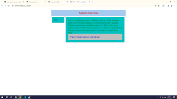
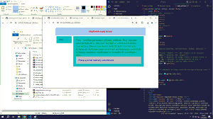

HTML
<!DOCTYPE html> <html> <head> <meta charset="utf-8"> <style type="text/css"> /* początek def CSS */ * { margin: 0px; padding: 0px;} /* zerowanie styli */ div {overflow: hidden; padding: 25px; } /* overflow: hidden --> ukrywanie tekstu wychodzącego poza granice elementu */ /* padding: 25px; --> wewnętrzny margines o rozmiarze 25px*/ #ramka { /* definicja elementu ID o nazwie ramka*/ margin-right: auto; /* auto -->margin, wyśrodkowanie */ margin-left: auto; min-width: 400px; /* minimalna szer strony-->400px */ max-width: 900px; /* maksymalna szer strony-->900px */ } #naglowek { background-color: skyblue; /* kolor tła na skyblue; */ font-size:16pt; /* wielkość czcionki na 16 na jaka tu jest jednostka-pt */ color:red; /* kolor czcionki: czerwony */ font-family: Arial; /* rodzina: Arial */ font-style: italic; /* styl: kursywa */ text-align: center; /* wyśrodkowanie tekstu */ font-weight:bold; /* grubość tekstu */ } #stopka { background-color: #c0c0c0; font-size:16pt; color:blue; font-family: Arial; font-style: italic; clear:both; /* clear-przyleganie elementów, both-pierwotne, blokowe opływanie */ } .kolumny {/*definicja elementu ???? (jest kropka i co to znaczy)*/ margin-top: 10px; /* margines, 10px od góry */ margin-right: 2%; /* margines, 2% całego elemenu od prawej strony */ margin-bottom: 2%; /* margines, 2% całego elementu od dołu */ margin-left: 10px; /* margines, 10px od lewej strony */ background-color: lightblue; } #kol1 { float: left; /* opływanie do lewej strony dla każdego kolejnego bloku */ width:100px; background-color: rgb(10, 182, 224); } #kol2 { background-color: rgb(10, 210, 224); color: green; font-size: 0.7cm; } </style> </head> <body> <div id="ramka"> <div id="naglowek">Nagłówek mojej strony </div> <div class="kolumny" id="kol1"><p>Menu</p> </div> <div class="kolumny" id="kol2"><p>Treść: Szablon pływający (płynny szablon). Przy zmianie okna przeglądarki zmieniać się będzie szerokość kolumn. Najczęściej zmiana szerokości dotyczy tylko wybranych kolumn np. kolumna menu pozostaje niezmieniona, pozostałe kolumny zmieniają się płynnie w stosunku do szerokości okna</p> <table border=1> <caption>Tekst definicja: szablonu pływającego</caption> <tr> <td>  </td> <td>  </td> </tr> </table> </div> <div id="stopka">Pracę wykonał nieznany woluntariusz </div> </body> </html>